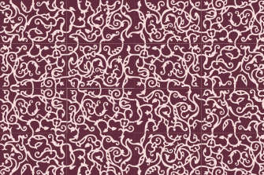

Отображение стыков
Zeram / 09.06.2010, 09:43/00:41
Форум:
При расстановке прямоугольных ячеек "стык в стык" на мониторе вижу границу толщиной в один пиксель. Как это будет воспроизводиться на реальной печати?
Можно ли это побороть какими-либо настройками отображения чтоб был виден сплошной узор без разделений?

Скачал твои узоры, открыл. Сразу заметил что именно у этого цвета съехал узор на чуть чуть.
А по проблеме, такие вещи всегда так отображались. Не скажу за все принтеры, но на офсете думаю при печати этого не будет. Даже если экспортировать в PDF, там тоже не видно.
Для перестраховщиков был где то макрос, что то типо sameAsFill. Он делает маленькую обводку такого же цвета что и заливка (естественно с градиентами не будет работать).
Стандартных средств исправления отображения не припомню.
Что съехало - ето да, там есть такое дело
А что нельзя исправить - обидно.
Надо значить учиться чере PDF фоны делать....
Давайте посчитаем.
Картинка для печати имеет ( или должна иметь)
разрешение 300dpi
или по другому 300 точек на 25,4 мм
или по другому 11,8 пикселей в 1 мм
или 1 пиксель на 0,085 мм
средний человеческий глаз уже не различает
две точки стоящие рядом на расстоянии 0,1 мм
монитор нам конечно показывает,
но на отпечатке невооруженным глазом заметить
этот пиксель будет непросто
И ещё ... см. аттач
слева два растровых объекта расположены встык
и полученны переводом вектора
с включенной галкой Anti-aliasing
справа такие объекты, но со снятой галкой
как говорится, почувствуйте разницу